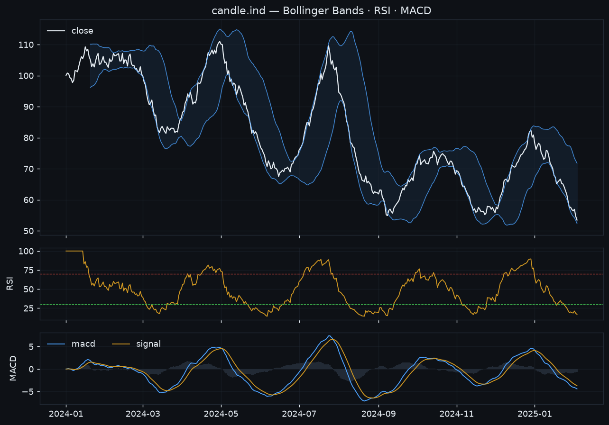

Strategies & risk¶
Built-in strategies¶
A broad library across every classic family. Toggle them from the cockpit (or
yq strategies --disable rsi_reversion); the enabled set is read via
enabled_strategies(state) and drives yq decide. Every strategy is optimizable
via yq optimize <sym> <interval> <name> (each ships a default parameter grid).
| Name | Idea |
|---|---|
macross |
SMA fast/slow crossover. |
ema_cross |
EMA fast/slow crossover (scalper's trigger). |
triple_ema |
EMA ribbon (fast/mid/slow) alignment. |
macd_momentum |
MACD line / signal crossover. |
supertrend |
ATR trailing trend; trade direction flips. |
adx_trend |
+DI/−DI crossover gated by ADX strength. |
parabolic_sar |
Parabolic SAR flips vs price. |
| Name | Idea |
|---|---|
volatility_breakout |
Larry Williams k-factor range breakout. |
donchian_breakout |
Break of the N-bar high/low channel. |
bollinger_breakout |
Close breaking outside the Bollinger Bands. |
keltner_breakout |
Break of the Keltner channel (EMA ± ATR). |
opening_range_breakout |
Break of the day's opening range (intraday; optional end-of-day flatten). |
volume_spike_breakout |
Breakout confirmed by a volume spike vs the recent average. |
keltner_squeeze_breakout |
TTM-style squeeze (Bollinger inside Keltner) release + breakout. |
| Name | Idea |
|---|---|
rsi_reversion |
Buy oversold / sell overbought RSI crossings. |
bollinger_reversion |
Fade band touches back toward the mean. |
stochastic_scalp |
%K/%D crossover out of OS/OB zones. |
stoch_rsi_scalp |
Stochastic-RSI %K/%D crossover. |
williams_r_scalp |
Williams %R reversal out of extremes. |
cci_reversion |
CCI reversal at ±threshold. |
mfi_reversion |
Money-Flow-Index (volume RSI) reversal. |
vwap_reversion |
Fade deviations from rolling VWAP. |
vwap_band_scalp |
Fade session-VWAP ± σ bands back toward VWAP (intraday scalp). |
micro_pullback |
Buy shallow pullbacks within an established up-trend (fast/slow EMA). |
rsi2_reversion |
Connors RSI(2): buy deep oversold dips while above a long trend SMA. |
stoch_momentum |
Trend-aligned stochastic: %K/%D bull cross above the midline (rides momentum, not a reversal). |
Scalping (5m / 15m)
The intraday set — opening_range_breakout, vwap_band_scalp,
volume_spike_breakout, micro_pullback — targets shorter timeframes.
Pair them with a session filter (trade only chosen weekdays/hours), the
session-resetting session_vwap indicator, and yq integrity --sessions so
overnight gaps in stock data don't read as missing bars.
Ensembling — blend strategies & signals¶
No single strategy is right all the time, so you can combine them. The same vote-aggregation core powers two layers:
- the
Ensemblestrategy (backtestable / optimizable), and - the operator's
yq decide(mixes live signals per watchlist symbol).
Each member's action on the bar is a vote — BUY (+1), SELL (-1), HOLD (0) —
combined by a rule:
| Rule | Decision |
|---|---|
any |
buy if any member buys and none sells (permissive; the decide default). |
weighted |
net weighted vote in [-1, 1] must clear ±threshold. |
majority |
the leading side must be ≥ threshold of the members that voted. |
unanimous |
all members that voted must agree (no opposing vote). |
Backtest a blend¶
yq ensemble BTCUSDT 1d --members macross,supertrend,rsi_reversion \
--rule weighted --threshold 0.4 --weights 2,1,1
from yammyquant import Backtest
from yammyquant.strategy import Ensemble, MACross, SuperTrendFollow, RSIReversion
ens = Ensemble([MACross(5, 20), SuperTrendFollow(10, 3), RSIReversion(14)],
weights=[2, 1, 1], rule="weighted", threshold=0.4)
print(Backtest(candle, ens).run())
Blend live signals in yq decide¶
yq strategies --rule weighted --threshold 0.5 --weight macross=2 --weight rsi_reversion=0.5
yq decide --weight 0.1 # now combines signals by the configured rule
Settings persist in state (ensemble_rule, ensemble_threshold,
strategy.<name>.weight) and are shown by yq strategies.
Indicators¶
All strategies build on a dependency-free indicator library, callable directly:
candle.ind.<name>(...). 30+ indicators are registered:
| Family | Indicators |
|---|---|
| Moving averages | sma ema wma hma dema tema vwma vwap session_vwap |
| Momentum / oscillators | rsi macd ppo roc momentum trix stoch stoch_rsi williams_r cci mfi |
| Volatility / channels | atr tr natr stddev zscore bbands bbwidth keltner donchian supertrend psar adx |
| Volume | obv cmf vwma mfi |
candle.ind.rsi(14) # Series
candle.ind.macd(12, 26, 9) # DataFrame: macd / signal / hist
candle.ind.supertrend(10, 3) # DataFrame: supertrend / direction

Multi-output indicators (macd, stoch, stoch_rsi, bbands, adx,
keltner, donchian, supertrend) return a DataFrame; the rest return a
Series aligned to the candle index.
Meta-strategies — wrap any strategy¶
Two wrappers add a gate around a base strategy without changing it:
| Wrapper | What it does |
|---|---|
RegimeFilter |
Only take the base strategy's entries when a higher-timeframe trend agrees (trend-regime gate). |
SessionFilter |
Only trade on configured weekdays / hours — flatten outside the session (for intraday/scalping). |
yq backtest BTCUSDT 1d macross --regime-trend 50 --regime-htf 4 # regime gate
yq backtest 005930 5m vwap_band_scalp --session-days 0-4 --session-hours 9-15
Backtesting¶
from yammyquant import Candle, Backtest, MACross
result = Backtest(candle, MACross(5, 20), cash=10_000, fee=0.001).run()
print(result) # Sharpe, Sortino, Calmar, max drawdown, CAGR, win rate, ...
Execution realism¶
Backtests can model the same frictions as live, so results don't flatter the strategy:
yq backtest BTCUSDT 1d macross --fee-exchange binance # that venue's maker/taker
yq backtest BTCUSDT 1d macross --slippage 0.001 --fill-timing next_open
yq backtest BTCUSDT 1d macross --allow-short --borrow-fee 0.0001 # shorting + carry
yq cost BTCUSDT 1d macross # how sensitive the edge is to cost
--fee-exchange applies that venue's real maker/taker schedule (limit orders pay
maker, market orders pay taker); --fill-timing next_open fills at the next bar's
open (no look-ahead). The same per-exchange fees + slippage carry into paper and
live, so a backtest, a paper run, and live all cost the same.
Risk layer (backtests)¶
from yammyquant.backtest.engine import Backtest
from yammyquant.backtest.risk import RiskConfig
Backtest(candle, strategy, risk=RiskConfig(
sizing="volatility", # volatility-targeted position sizing (or kelly/fraction)
stop_loss=0.05,
take_profit=0.10,
atr_stop=2.0, # ATR-multiple stop (adapts to volatility)
trailing_stop=0.08, # lock in gains as price advances
breakeven_trigger=0.04, # move the stop to entry once this far in profit
scale_out=0.5, # take half off at the take-profit, let the rest run
max_holding_bars=20, # time stop
max_drawdown=0.20, # drawdown kill-switch
))
The same protective exits run on live/paper open positions via yq protect
(stop / take / trailing / ATR / scale-out), and yq decide snapshots an OCO
bracket on each filled entry so protect manages the exit.
Account risk policy (live & paper)¶
The account-level risk policy is enforced on every order — it can reject a trade before it fills:
| Field | Meaning |
|---|---|
max_order_value |
Cap on a single order's notional. |
max_position_value |
Cap on a single position's notional. |
max_open_positions |
Cap on simultaneous positions. |
max_symbol_weight |
Cap on one symbol's share of equity. |
daily_loss_limit |
Halt new entries after this realized loss in a day. |
cooldown_minutes |
Minimum gap between trades on a symbol. |
Signal → order: yq decide¶
yq decide aggregates enabled-strategy signals per watchlist symbol into concrete,
risk-sized orders (entry sized to a fraction of equity; exits flatten). Dry-run by
default; --execute submits; --type limit rests live orders until yq sync
settles them. Set auto_trade=true to let yq cycle / the scheduler call
decide --execute automatically (paper unless trade_mode=live).
Entries pass through optional gates before sizing: a session gate
(weekdays/hours), a sentiment gate (sentiment_gate), and a min-edge
gate for scalping — yq settings min_edge_mult=2 vetoes a BUY when a typical bar
move (ATR%) is smaller than min_edge_mult × the round-trip taker cost
(fees + slippage, entry + exit), so you don't churn on edges the costs would eat.
Position sizing¶
decide sizes entries by the sizing setting:
sizing |
Behaviour |
|---|---|
fixed (default) |
weight of equity. |
volatility |
Scales down from weight when recent realized vol exceeds target_vol (volatility targeting); never above weight. |
kelly |
A capped Kelly fraction from the realized win/loss record, capped by weight. |
Strategy decay¶
yq expect BTCUSDT 1d macross # record a backtest baseline
yq decay # warn when realized < baseline (edge erosion)
Promotion: backtest → paper → live¶
The development pipeline is backtest → paper → live. yq promote is the gate
between paper and live, with two views:
Account-level — grades the whole paper account against each baseline:
- enough closed round-trips (
--min-trades, default 20), - realized Sharpe ≥
--sharpe-floor(default 0.7) × the backtested Sharpe, - positive paper return,
- realized drawdown ≤
--max-dd-mult(default 1.5) × the backtested drawdown.
Per-strategy — grades each baseline's strategy on its own attributed paper
record (from yq attribution): enough round-trips, positive attributed PnL, and
realized win-rate ≥ --win-rate-floor (default 0.8) × the backtested win-rate.
This isolates which strategy actually earns its keep when several share the book
(Sharpe/return aren't attributable, so they stay account-level).
yq expect BTCUSDT 1d macross # 1. validate & baseline in backtest
# ... run it in paper for a while (auto_trade / yq cycle) ...
yq promote # 2. ready to graduate to live? (account + per-strategy)
yq cycle also runs the promotion check automatically when baselines exist, so an
unattended loop notifies you the moment something is ready. Ready ≠ armed:
going live still requires YQ_ALLOW_LIVE=1 and approval (or auto mode) — see
Money safety.